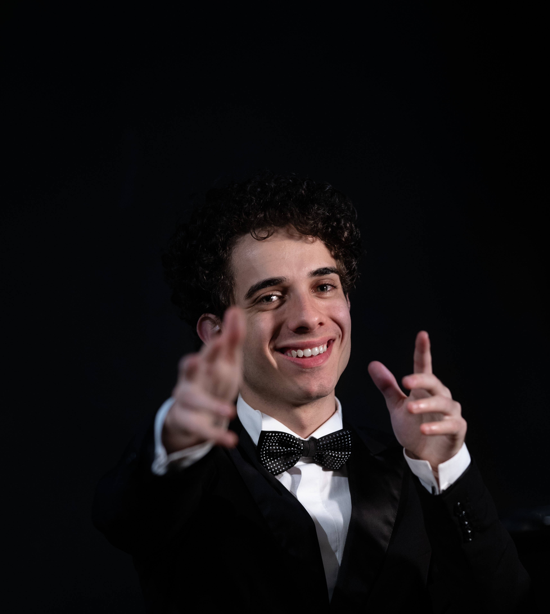
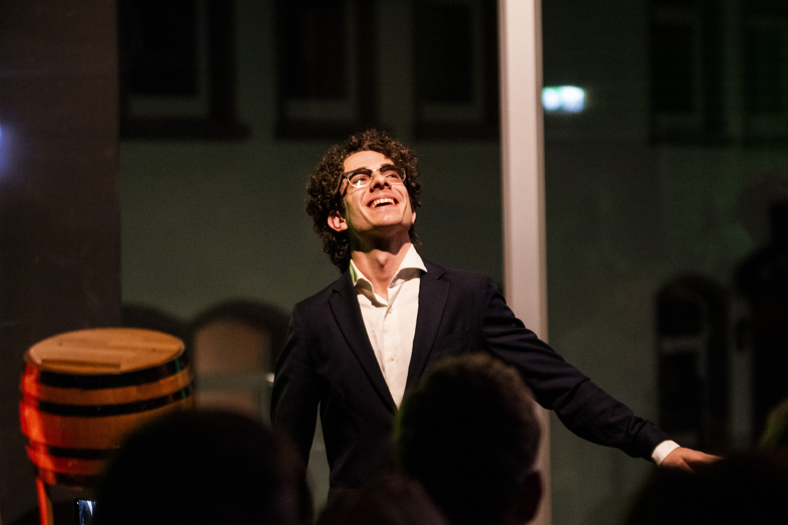

Pianista italiano
Biografia
Elogiato dalla critica internazionale per l'«affascinante sprezzatura» (Suonare News) e la «maestria trascendentale, uno slancio impavido e un virtuosismo giovanile da togliere il fiato» (AxworthyCommentary), Fulvio Nicolosi si esibisce regolarmente in Europa, calcando prestigiosi palcoscenici dal Teatro La Fenice di Venezia alla Steinway Hall di Londra. Vincitore di oltre venti concorsi pianistici internazionali, è tra i giovani talenti inseriti nel circuito concertistico del Keyboard Charitable Trust.
Nato a Catania nel 2003, si è diplomato con lode e menzione d'onore nei conservatori di Catania e Perugia. Attualmente prosegue il proprio perfezionamento presso la International Piano Academy Lake Como, accademia fondata da William Grant Naboré con Martha Argerich in veste di Presidente Onorario, riconosciuta tra i più autorevoli centri mondiali di alta formazione pianistica.
AltroProssimi Appuntamenti
Non è stato possibile caricare i concerti. Riprova più tardi.
Performance Video

Contatti
Per richieste di concerti, collaborazioni artistiche o ufficio stampa, compila il modulo o scrivi direttamente a:
fulvionicolosi@gmail.com